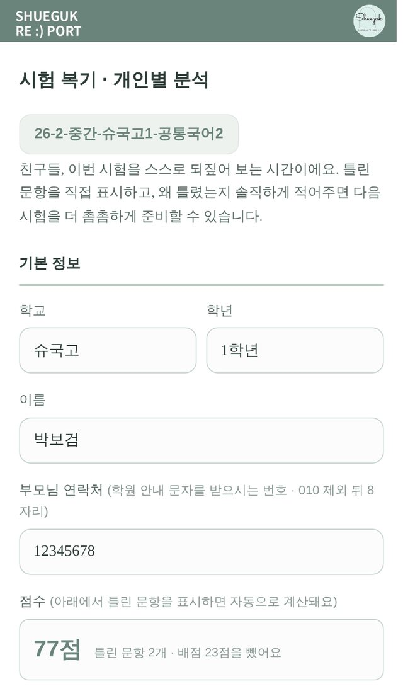
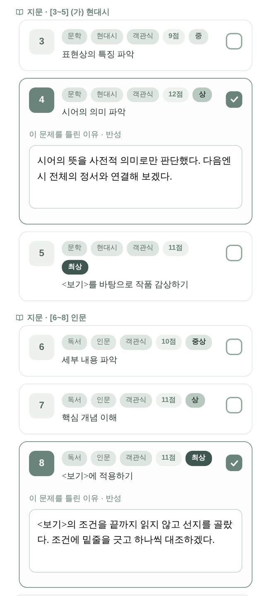
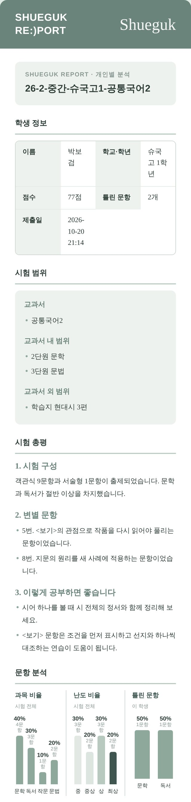
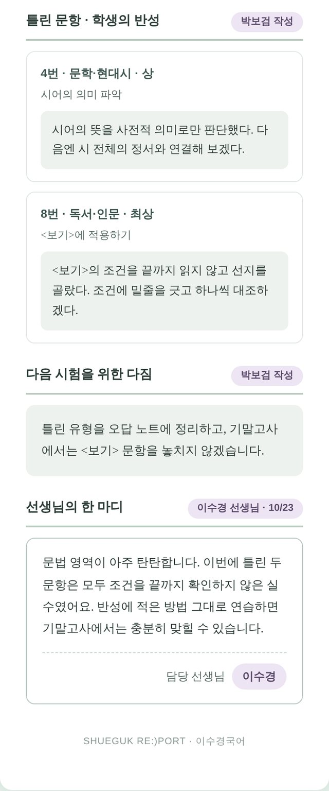
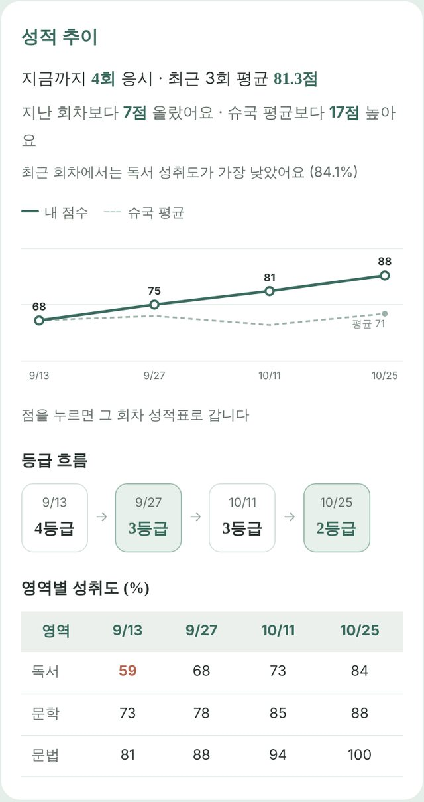
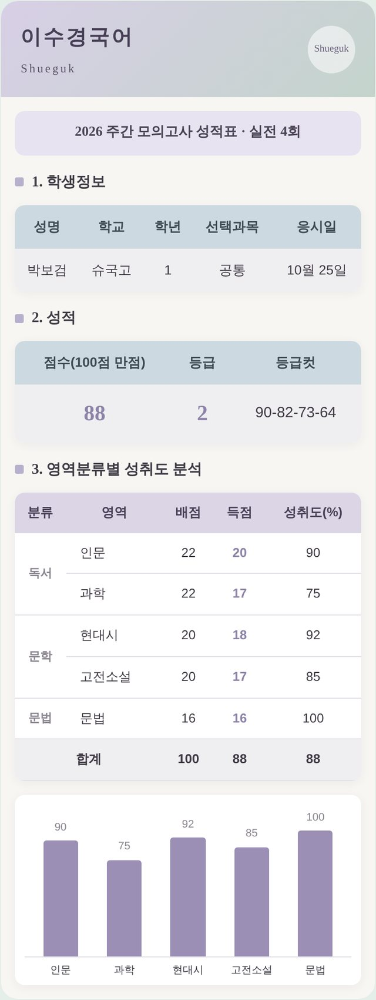
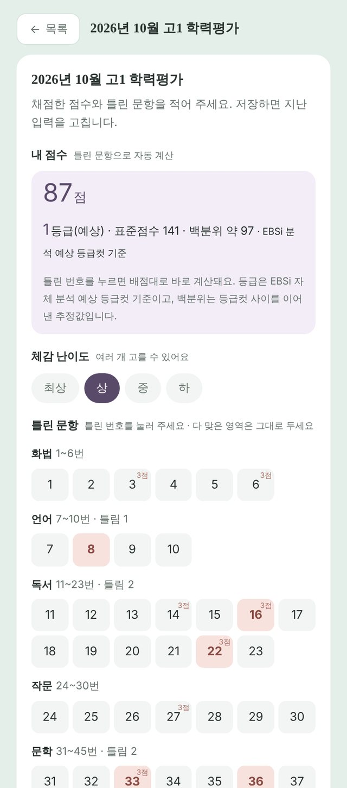
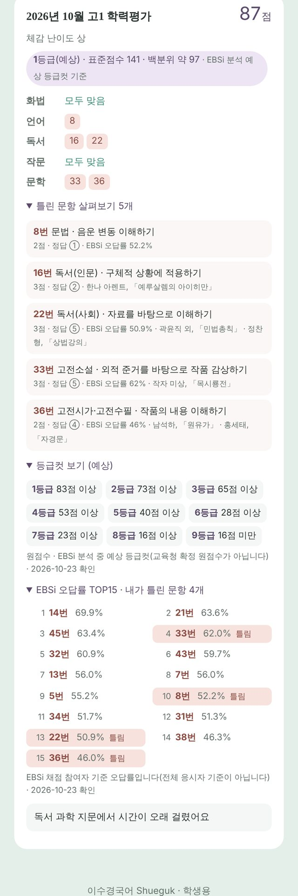

학생을
공부하게 만듭니다.

학부모님께 이수경국어 슈퍼스타 페이지를 소개합니다. 학생마다 자기만의 페이지가 하나씩 있고, 수업과 과제, 시험과 질문이 모두 이곳에 기록됩니다. 아이가 오늘 무엇을 배웠고 무엇을 해야 하는지, 학부모님도 같은 화면으로 확인하실 수 있어요.
공부는 '했다'는 기록이 쌓일 때 계속됩니다
수업 시간에 열심히 듣는 것만으로는 실력이 오르지 않습니다. 배운 것을 다시 풀어 보고, 틀린 것을 돌아보고, 모르는 것을 묻는 시간이 이어져야 합니다. 슈퍼스타 페이지는 이 과정을 하루하루 눈에 보이게 만듭니다.
오늘 수업 정리
매주 스스로
성적 리포트
질문하기
수업 리포트
수업이 끝나면 담당 선생님이 학생 한 명 한 명의 수업 기록을 남기고, 정리된 리포트가 슈퍼스타 페이지에 올라갑니다. 수업 한 번에 한 장씩 쌓입니다.
- 출석과 수업 태도 — 제시간 출석·지각·결석과 그날의 수업 태도를 적습니다.
- 수업 진도와 수업 내용 — 오늘 어디까지 배웠는지 한눈에 볼 수 있습니다.
- 과제 검사 — 지난 수업에서 낸 과제를 하나씩 검사합니다. 얼마나 했는지(학습량)와 함께 채점·학습 분석·오답 분석까지 했는지 나누어 봅니다.
- 다음 수업까지 과제 — 무엇을 해 와야 하는지 집에서도 확인할 수 있어요.
- 선생님 코멘트 — 담당 선생님이 학생에게 건네는 말입니다.
| 과제 | 학습량 | 채점 | 학습 분석 | 오답 분석 |
|---|---|---|---|---|
| 주간 과제집 | 5/5 | 완벽 | 완벽 | 일부함 |
같은 화면의 출석 기록 탭에서는 지금까지의 출석·지각·결석 내역과 출석률을 모두 보실 수 있습니다.
매주 스스로 하는 공부
수업 밖에서도 공부가 이어지도록, 슈퍼스타 페이지에서 바로 풀고 바로 결과를 확인합니다.
주차마다 정해진 어휘를 공부하고 테스트를 봅니다. 제출했는지가 카드에 바로 표시됩니다.
단원별 스테이지를 하나씩 깨는 방식입니다. 정답률 70%를 넘겨야 다음 스테이지가 열려요.
선생님이 내 준 과제를 슈퍼스타 페이지에서 풀고 제출합니다. 남은 과제 수가 카드에 보입니다.
결석한 수업 등을 영상으로 다시 봅니다. 본 구간과 시청 시간이 기록돼요.
시험이 끝난 뒤가 진짜 공부입니다
점수만 확인하고 넘어가면 같은 문제를 또 틀립니다. 이수경국어는 시험 하나하나를 기록하고, 분석하고, 다시 들여다보게 만듭니다. 학교 지필고사, 주말 실전 모의고사, 교육청·평가원 모의고사 세 가지 시험이 모두 슈퍼스타 페이지에 쌓입니다.
아래 화면은 모두 예시 학생 '박보검'의 가상 데이터로 만든 실제 화면입니다. 그림을 누르면 크게 볼 수 있고, 휴대폰에서는 그림을 옆으로 넘겨 보실 수 있어요.
지필고사 리포트
시험지를 분석한 학원의 리포트, 학생이 직접 쓰는 복기, 담당 선생님의 피드백이 한 장에 모입니다.
- 학원이 시험지를 분석합니다학교 시험이 끝나면 시험지를 문항마다 영역·세부 유형·난도·배점으로 나누고, 시험 범위와 시험 총평을 정리해 리포트의 바탕을 만듭니다.
- 학생이 스스로 복기합니다슈퍼스타 페이지에서 틀린 문항을 누르면 배점대로 점수가 계산됩니다. 틀린 문항마다 '왜 틀렸는지'를 적고, 다음 시험을 위한 다짐을 남깁니다.
- 담당 선생님이 읽고 답합니다선생님이 학생의 반성을 읽고 한 마디를 적어 보내면, 그때 리포트가 학생 페이지에 도착합니다. 도착하면 알림톡으로도 안내드려요.




- 시험 총평 — 시험 구성, 점수가 갈린 변별 문항, '이렇게 공부하면 좋습니다'까지 정리합니다.
- 문항 분석 — 시험 전체의 영역·난도 비율 옆에 우리 아이가 틀린 영역을 나란히 보여 드립니다.
- 학생의 반성과 다짐 — 아이가 자기 말로 쓴 글입니다. 다음 시험 전에 함께 읽어 보세요.
- 시험이 끝날 때마다 리포트가 한 장씩 쌓여, 학기마다 무엇이 나아졌는지 비교할 수 있습니다.
주말 실전 모의고사
실제 시험과 같은 시간·형식으로 치르는 학원 모의고사입니다. 신청부터 답안 제출, 성적표까지 모두 슈퍼스타 페이지에서 이어집니다.
- 신청열린 요일 가운데 하나를 골라 신청합니다. 요일마다 정원이 있는 선착순입니다.
- OMR 답안 제출시험을 마치면 OMR 답안을 입력해 제출합니다. 제출하면 자동으로 채점됩니다.
- 성적표와 성적 추이회차마다 성적표가 만들어지고, 회차가 쌓이면 점수와 등급의 흐름을 한눈에 보여 드립니다.


- 한 줄 요약 — 응시 횟수, 최근 3회 평균, 지난 회차와 슈국 평균에 견준 차이, 성취도가 가장 낮았던 영역을 문장으로 알려 드립니다.
- 점수 그래프 — 내 점수(실선)와 같은 회차 슈국 평균(점선)을 함께 그립니다. 점을 누르면 그 회차 성적표로 갑니다.
- 영역별 성취도 — 독서·문학·문법처럼 영역마다 몇 퍼센트를 맞혔는지 회차별로 비교합니다. 약한 영역이 바로 보입니다.
- 문항 채점표 — 성적표 아래에 문항마다 정답과 학생의 답이 함께 나옵니다.
성적 화면은 학부모님 휴대전화 번호 뒤 8자리로 한 번 더 확인한 뒤 열립니다.
교육청·평가원 모의고사 리포트
학교에서 치른 전국연합학력평가와 모의평가도 그냥 지나가지 않습니다. 틀린 번호만 누르면 채점과 분석이 따라옵니다. 고1·고2 학생이 사용합니다.
- 틀린 번호를 누릅니다학교에서 시험을 마치면 슈퍼스타 페이지에서 틀린 문항 번호만 고릅니다. 학원이 정답과 배점을 넣어 둔 회차는 원점수가 바로 계산됩니다.
- 예상 등급을 확인합니다원점수와 함께 예상 등급·표준점수·백분위를 보여 드립니다. 체감 난이도와 시험 후기도 남겨요.
- 틀린 문항을 살펴봅니다틀린 문항마다 영역·출제 의도·배점·정답·작품 출처를 정리해 보여 드리고, 많이 틀린 문항 순위에서 내가 틀린 문항을 표시합니다.


- 영역별 틀린 문항 — 화법·언어·독서·작문·문학 가운데 어디서 틀렸는지 한눈에 보입니다.
- 틀린 문항 살펴보기 — 문항이 무엇을 묻는지(출제 의도)와 지문 출처까지 확인하며 다시 풀어 볼 수 있어요.
- 오답률 TOP 15 — 많은 학생이 어려워한 문항 가운데 우리 아이가 틀린 것이 표시됩니다. 남들도 어려워한 문항인지, 놓치면 안 되는 문항인지 구분하는 데 도움이 됩니다.
- 회차가 쌓이면 점수 흐름이 막대로 이어져 학년 내 변화를 볼 수 있습니다.
등급컷과 오답률은 EBSi가 발표한 분석 자료를 기준으로 하며, 시험 직후에는 예상 등급컷입니다. 확정 성적은 학교에서 받는 성적표로 확인해 주십시오.
학교별 시험 분석 자료
학교별 시험 분석과 같은 자료도 슈퍼스타 페이지에서 볼 수 있어요. 예비 고1에게는 지금 '덕양구 8개 주요학교 고1 국어 미리보기'가 열려 있습니다.
모르는 것을 그냥 두지 않습니다
- 클리닉 신청 — 따로 설명을 들어야 할 부분을 미리 신청하면, 담당 선생님 클리닉 시간에 다룹니다.
- 질문하기 — 학원에서 질문 내용과 사진을 올리면 선생님별 대기 순서에 들어가고, 차례가 되면 강의실 화면으로 이름이 불립니다.
슈퍼스타 별
어휘 테스트 제출, 과제 검사 만점, 문법 세트 클리어, 시험 복기, 공지 확인처럼 해야 할 공부를 해낼 때마다 별이 쌓입니다. 별이 모이면 등급이 올라가고, '알려드립니다'에는 별을 가장 많이 모은 TOP 30이 오릅니다. 선생님이 직접 별을 선물하기도 해요.
알려드립니다
학원 공지와 첨부 파일, 지필고사 분석지를 이곳에서 확인합니다. 학생이 [확인했습니다]를 눌러야 확인한 것으로 남습니다.
이렇게 열어 보세요
- 학원에서 보내 드리는 카카오 알림톡의 [학생 페이지 링크] 버튼을 누르면 우리 아이 페이지가 열립니다. 학생마다 주소가 달라요.
- 휴대폰 브라우저에서 '홈 화면에 추가'를 해 두시면 앱처럼 바로 열 수 있습니다.
- 일부 성적 화면은 학부모님 휴대전화 번호 뒤 8자리로 한 번 더 확인합니다.
- 링크는 학생 개인 페이지이므로 다른 분과 나누지 말아 주십시오.
학원 공지나 지필고사 리포트처럼 꼭 확인하실 내용은 알림톡으로도 안내드립니다. 아이와 함께 화면을 열어 오늘 배운 것과 해야 할 과제를 이야기 나눠 보세요.
공부하는 습관은
매일의 기록에서 시작됩니다.
학생이 스스로 공부하는 힘을 기를 때까지, 이수경국어가 함께 기록하고 함께 확인하겠습니다.
이수경국어 · 슈국